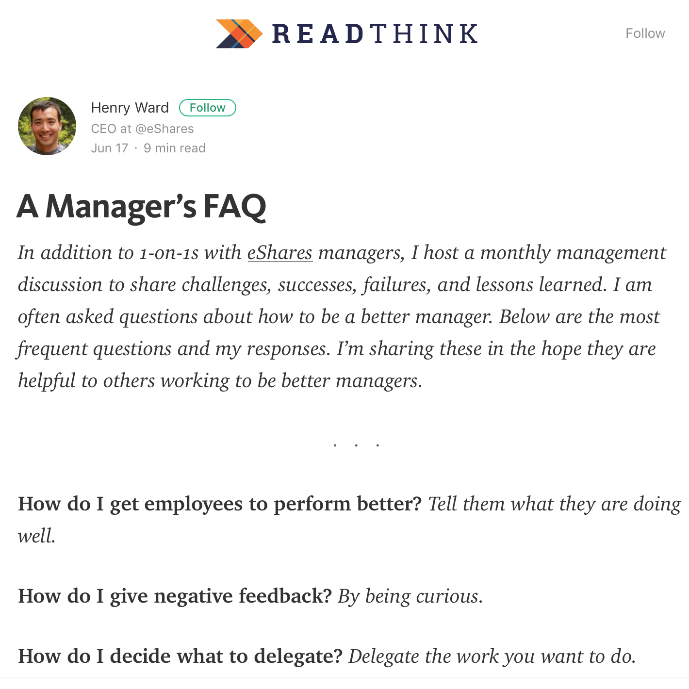

A Manager's FAQ

Henry Ward has some interesting responses to some of these questions, and not all of them do I agree with. Regardless, I most liked the non-abbreviated answers he gave to the following questions:
- How do I get employees to perform better?
- How do I give negative feedback?
- When do I fire somebody?
- Why can’t I just tell people what to do?
SPOILER ALERT! Here are the abbreviated answers he gives to those questions:
- Tell them what they are doing well.
- By being curious.
- When you know they can’t succeed.
- Because the more responsibility you have, the less authority you have.